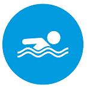
RESPIRADERO DE VOLCAN
| 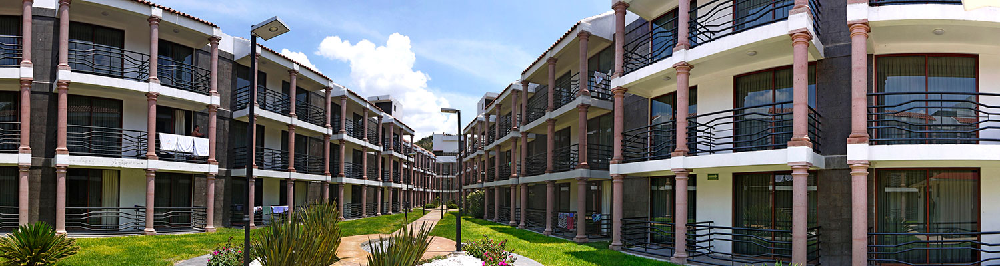 |
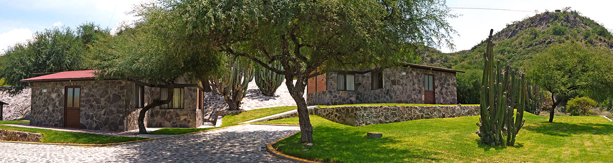 |
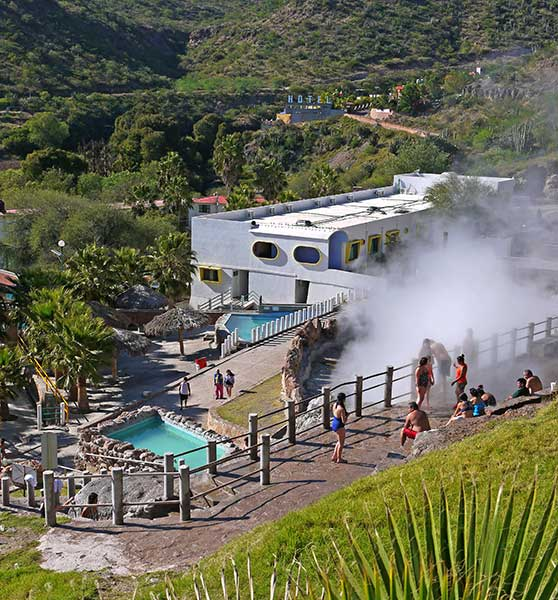 |
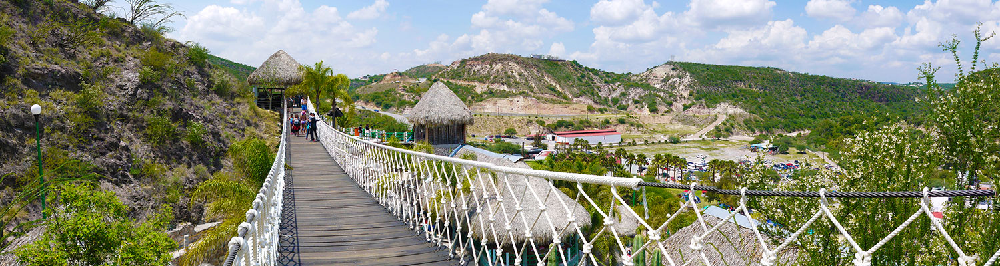 |
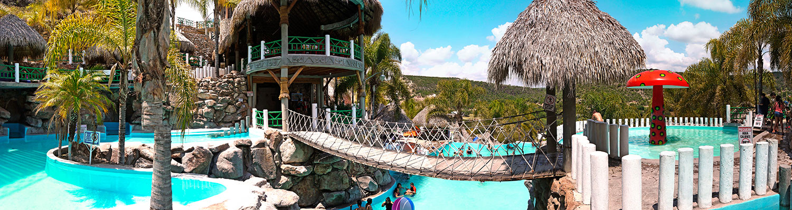 |
| ATRACCIONES |
DESCRIPCIÓN |
FOTOGRAFIA |
PRECIO |
DETALLES |
| |
Alberca familiar
Balneario Spa El Geiser te ofrece dos albercas de amplias dimensiones rodeadas de palapas, chapoteaderos y puentes colgantes. Una de ellas con la temperatura más fresca de todo el balneario y la otra la más profunda y con temperatura de hasta 80º C, en esta última podrás disfrutar de relajantes cuevas artificiales llenas de agua termal y del famoso puente colgante con dos miradores panorámicos para que contemples el hermoso paisaje. |
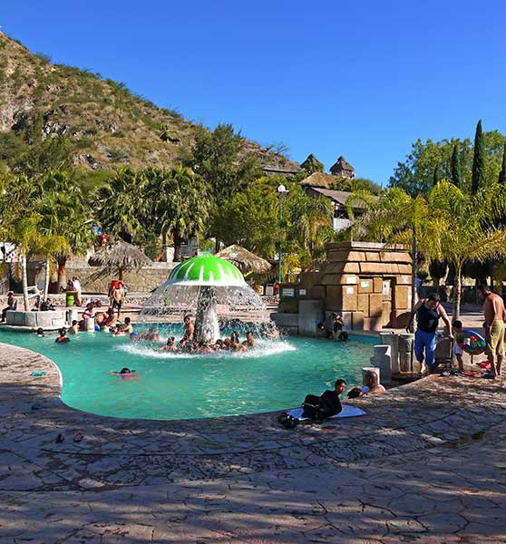 |
- ENTRADA GENERAL AL BALNEARIO $150.ºº
- NIÑOS mayores de 95cm pagan entrada general
- INSEN $75.ºº
| *Estrictamente prohibido el ingreso de bebidas alcohólicas. |
| |
Hospedate en nuestro Hotel El Geiser
Si deseas pasar más de un día en nuestro parque, te ofrecemos cómodas habitaciones para disfrutar una noche maravillosa en El Geiser.
Contamos con diferentes precios y modalidades, desde lindas habitaciones sencillas, hasta amplias habitaciones con cocina equipada, aire acondicionado, closet y tina.
|
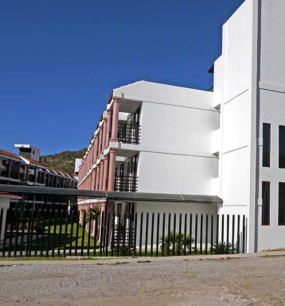 |
- 1Habitación sencilla con baño (2 PERSONAS) 1 cama matrimonial, TV, WC y regadera $450.ºº
- 2Habitación sencilla sin baño
2 PERSONAS 1 cama matrimonial y TV $350.ºº
| *La renta de la habitación no incluye la entrada al balneario. |
 |
Deleita tu paladar
Contamos con 2 restaurantes que están abiertos al público de 7 a.m. a las 5 p.m. con menú variado, desde desayunos hasta platillos a la carta y de costos muy accesibles para que disfrutes del exquisito sabor de nuestros platillos y bebidas.. |
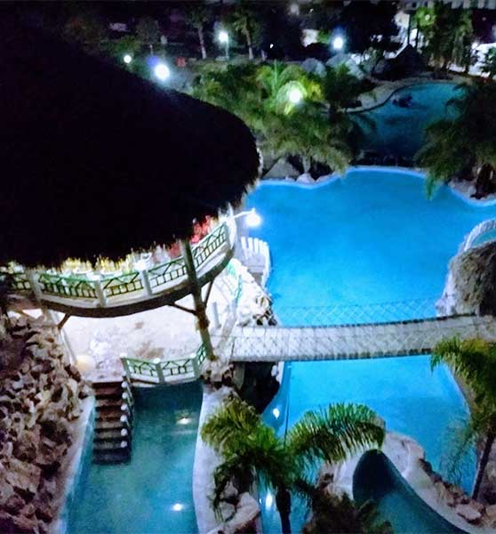 |
|
*Vista panorámica
*Acceso por el puente colgante
|
 |
Circuito de tirolesas Canopy.
Para los amantes y adictos de la adrenalina, en el parque acuático El Geiser contamos con un circuito de tirolesas y puentes colgantes únicos en la región. Las tirolesas van de un extremo a otro del parque cruzando impresionantes barrancos y volando sobre un vacío con una increíble sencación.
|
 |
- Recorrido en tirolesa $250.ºº por persona
| *En el circuito te encontrarás con puentes colgantes extremos, cruzarás por una cuerda los barrancos y temblarás de adrenalina pura al pasar por los puentes con pasos de madera |
| |
Déjate consentir en El Geiser con un masaje relajante, disfruta de un intenso descanso y renueva tu energía.
| 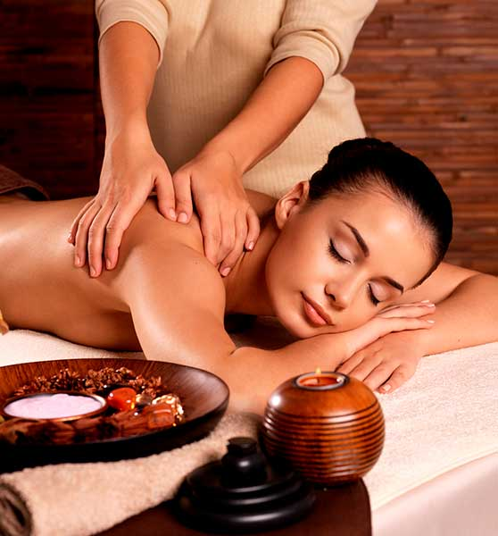 |
-
Contamos con masajes que van desde los 200 pesos hasta casi los 400 pesos, desde anti-estrés hasta el holístico; también hay masajes para los bebés y mujeres embarazadas.
|
*Debido a la contingencia sanitaria por el COVID-19 este servicio se encuentra, por el momento, fuera de servicio hasta nuevo aviso!! |
| |
La renta de casa de campaña no incluye la entrada al balneario. |
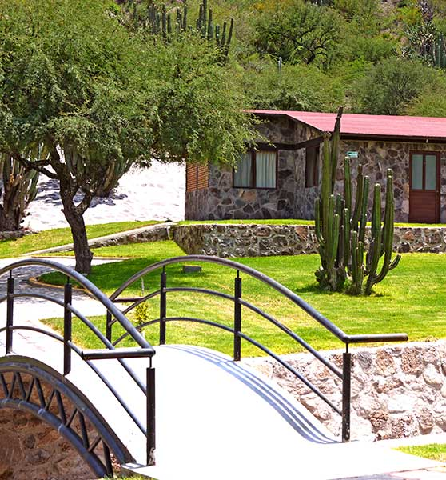 |
Cabaña para 8 personas.$2,400.ºº
- 2 recámaras, cada una con 2 camas matrimoniales y TV.
- estancia familiar.
- regadera con WC.
- cocina con estufa y refrigerador.
- mesa con 4 sillas (sin utensilios).
| *Realiza tu reservación |